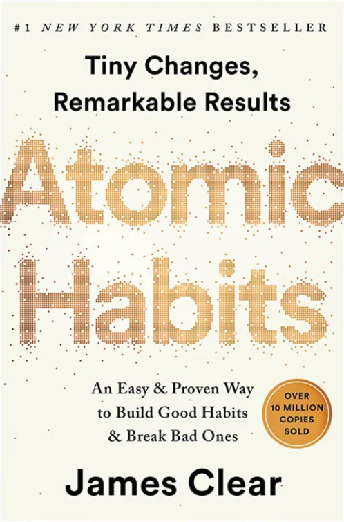

Atomic Habits – cuốn sách nổi tiếng của James Clear mang đến phương pháp khoa học và thực tế để hình thành thói quen tốt loại bỏ thói quen xấu và tạo ra sự thay đổi bền vững.
Tác giả nhấn mạnh sức mạnh của những hành động nhỏ khi được duy trì đều đặn sẽ tạo nên những kết quả lớn lao. Cuốn sách giúp người đọc hiểu rõ cách thiết kế môi trường và hệ thống để hỗ trợ sự phát triển bản thân.
Atomic Habits không chỉ là hướng dẫn về thói quen mà còn là lời khẳng định rằng thành công đến từ sự kiên trì và cải thiện từng ngày. Đây là tác phẩm truyền cảm hứng cho bất kỳ ai muốn thay đổi cuộc sống theo hướng tích cực.